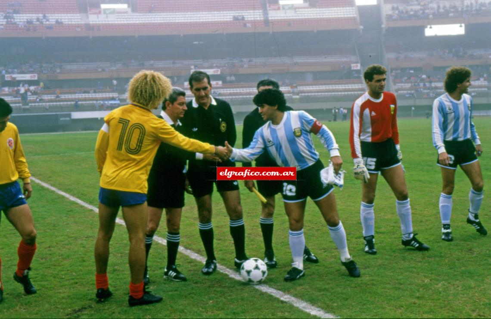

.jpeg)
The first football team in South America, Lima Cricket and Football Club, was established in Peru in 1859, and the Argentine Football Association was founded in 1893. By the early 20th century, football was growing in popularity, and the first international competition held among national teams of the continent occurred in 1910 when Argentina organized an event to commemorate the centenary of the May Revolution.
Chile and Uruguay participated, but this event is not considered official by CONMEBOL. Similarly, for the centennial celebration of its independence, Argentina held a tournament between 2 and 17 July 1916 with Argentina, Chile, Uruguay and Brazil being the first participants of the tournament.
This so-called Campeonato Sudamericano de Football would be the first edition of what is currently known as Copa América; Uruguay would triumph in this first edition after tying 0–0 with hosts Argentina in the deciding, last match held in Estadio Racing Club in Avellaneda.
After a flu outbreak in Rio de Janeiro canceled the tournament in 1918, Brazil hosted the tournament in 1919 and was crowned champion for the first time after defeating the defending champions 1–0 in a playoff match to decide the title, while the Chilean city of Viña del Mar would host the 1920 event which was won by Uruguay.
For the 1921 event, Paraguay participated for the first time after its football association affiliated to CONMEBOL earlier that same year.
Argentina won the competition for the first time thanks to the goals of Julio Libonatti. In subsequent years, Uruguay would dominate the tournament, which at that time was the largest football tournament in the world.
Argentina, however, would not be far behind and disputed the supremacy with the Charruas. After losing the 1928 final at the 1928 Summer Olympics held in Amsterdam, Argentina would gain revenge in the 1929 South American Championship by defeating the Uruguayans in the last, decisive match. During this period, both Bolivia and Peru debuted in the tournament in 1926 and 1927, respectively.

In 1986, CONMEBOL decided to return to having one country host the tournament and to contest it every other year.
From 1987 until 2001, the event was hosted every two years in rotation by the ten members of the confederation. The format would remain constant with a first round of groups, but the final round stage ranged from being a new, final round-robin group or a single-elimination system to decide the winner.
This renewal helped the tournament, which began to receive television coverage in Europe and North America. The 1987 Copa América was held in Argentina; this was the first time the nation had hosted an edition in 28 years.
Despite entering as heavy favorites for being the reigning world champions (having won the 1986 FIFA World Cup), playing at home and having a team largely composed of its World Cup winners led by the legendary Diego Maradona, Argentina would finish in a disappointing fourth place after being beaten by defending champions Uruguay 0–1 in the semifinals. Uruguay would defeat a surprisingly strong Chilean squad who made it to the final, disposing of the powerful Brazil 4–0 on the group stage.
Brazil lifted its first official international title since the 1970 FIFA World Cup upon winning the 1989 Copa América held on home soil.
Argentina, in turn, won the Copa América after 32 long years in 1991 in Chile, thanks to a refreshed squad led by the prolific goalscorer Gabriel Batistuta. The 1993 Copa América tournament in Ecuador would take its current form. Along with the usual ten teams, CONMEBOL invited two countries from CONCACAF to participate, Mexico and the United States.
Uruguay managed to win the competition in 1995 as host, ending a period of decline for Uruguayan football.
With the implementation of rotating hosts, Colombia, Paraguay and Venezuela hosted the tournament for the first time. Brazil entered a series of victories, winning four of the five continental titles between 1997 and 2007. The first, in 1997, was won after defeating host nation Bolivia 1–3 with goals from Leonardo, Denílson and Ronaldo becoming crucial in the Verde-Amarela's consagration on Bolivia's altitude.
Brazil would successfully defend the title in 1999 after thumping Uruguay 3–0 in Asuncion, Paraguay. However, the 2001 Copa América saw one of the biggest surprises of the history of the sport as Honduras eliminated Brazil in the quarterfinals. Colombia, the host nation, would go on to win the competition for the first time ever.
Argentina hosted the 2011 competition and was ousted by Uruguay in the quarterfinals by penalty shootout.
Uruguay would go on defeating Peru 2–0 in the semis to reach the finals and overpower Paraguay 3–0, thus winning the trophy on Argentinean soil for the third time and second in a row.
This, the 43rd edition, was the first time that neither Argentina nor Brazil reached the semifinals of a tournament they both had entered.
The 2015 competition was hosted in Chile, who swapped hosting positions with Brazil in light of the latter's hosting of the 2014 FIFA World Cup and 2016 Summer Olympics. Chile went on to win the tournament, their first title, on home soil.
In 2016, the centenary of the tournament was celebrated with the Copa América Centenario tournament hosted in the United States; the tournament was the first to be hosted outside of South America and had an expanded field of 16 teams from CONMEBOL and CONCACAF.
During the tournament, media outlets reported that CONMEBOL and CONCACAF were negotiating a merger of the Copa América with the CONCACAF Gold Cup, the latter's continental tournament held every 2 years, with the United States hosting regular tournaments; United States Soccer Federation president Sunil Gulati called the report inaccurate, saying that no such discussion had taken place and that a new tournament would have to be established.
For the second time, Chile won the trophy in a penalty shoot-out. The 2016 edition broke tournament records for attendance, with 1.5 million total spectators and an average of 46,000 per match through the semi-finals.
Brazil hosted the 2019 edition, which was played in the normal four-year cycle, and won their ninth title by defeating Peru in the final at the renovated Maracanã Stadium.
CONMEBOL approved a permanent switch from odd to even years beginning with the 2020 Copa América, which would be jointly hosted by Argentina and Colombia and split into two groups. The tournament was postponed by a year due to the COVID-19 pandemic and lost two invited teams from Asia—Australia and Qatar—due to fixture congestion.
Colombia requested that the tournament be moved to November 2021 due to widespread protests and increased COVID-19 cases, but withdrew after CONMEBOL rejected a second postponement. 13 days prior to the opening match, the entire tournament was moved to Brazil due to a rise in COVID-19 cases in Argentina.
The 2021 Copa América was played by 12 teams with no spectators at most matches due to the pandemic; the final at the Maracanã was limited to 10 percent of capacity. Argentina won their first title in 28 years by defeating Brazil in the final.
| The Winner | Year | Host |
|---|---|---|
| Uruguay | 1916 | Argentina |
| Uruguay | 1917 | Uruguay |
| Brazil | 1919 | Brazil |
| Uruguay | 1920 | Chile |
| Argentina | 1921 | Argentina |
| Brazil | 1922 | Brazil |
| Uruguay | 1923 | Uruguay |
| Uruguay | 1924 | Uruguay |
| Argentina | 1925 | Argentina |
| Uruguay | 1926 | Chile |
| Argentina | 1927 | Peru |
| Argentina | 1929 | Argentina |
| Uruguay | 1935 | Peru |
| Argentina | 1937 | Argentina |
| Peru | 1939 | Peru |
| Argentina | 1941 | Chile |
| Uruguay | 1942 | Uruguay |
| Argentina | 1945 | Chile |
| Argentina | 1946 | Argentina |
| Argentina | 1947 | Ecuador |
| Brazil | 1949 | Brazil |
| Paraguay | 1953 | Peru |
| Argentina | 1955 | Chile |
| Uruguay | 1956 | Uruguay |
| Argentina | 1957 | Peru |
| Argentina | 1959 | Argentina |
| Bolivia | 1963 | Bolivia |
| Uruguay | 1967 | Uruguay |
| Peru | 1975 | South America |
| Paraguay | 1979 | South America |
| Uruguay | 1983 | South America |
| Uruguay | 1987 | Argentina |
| Brazil | 1989 | Brazil |
| Argentina | 1991 | Chile |
| Argentina | 1993 | Ecuador |
| Uruguay | 1995 | Uruguay |
| Brazil | 1997 | Bolivia |
| Brazil | 1999 | Paraguay |
| Colombia | 2001 | Colombia |
| Brazil | 2004 | Peru |
| Brazil | 2007 | Venezuela |
| Uruguay | 2011 | Argentina |
| Chile | 2015 | Chile |
| Chile | 2016 | United States |
| Brazil | 2019 | Brazil |
| Argentina | 2021 | Brazil |